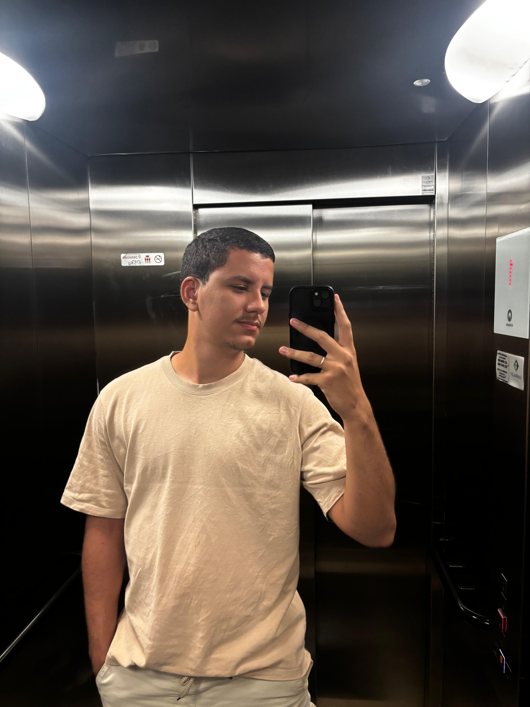

Desenvolvedor .NET · Palmas, Tocantins — Brasil
Desenvolvedor de Software com foco em back-end, C#, ASP.NET Core, SQL e APIs REST. Atuo na construção de sistemas institucionais, integrações entre plataformas e automações que reduzem processos manuais.
Sobre mim

↓ Baixar currículoSou desenvolvedor de software júnior com experiência em sistemas institucionais, atuando principalmente com C#, ASP.NET Core, SQL, APIs REST e integrações entre plataformas. Na ESMAT/TJTO, atuo com autonomia no ciclo completo de desenvolvimento do levantamento de requisitos ao deploy.
Desenvolvi integrações com APIs institucionais, sincronização com o Moodle e automação de processos acadêmicos com apoio da Vertex AI (Google Cloud), reduzindo etapas manuais e melhorando o fluxo operacional do setor.
Estou concluindo o Bacharelado em Ciência da Computação pela UFT (previsão julho/2026), com TCC aprovado com nota 10. Também possuo formação técnica em Informática pelo IFBA.
Trajetória
Portfólio
Tecnologias
Formação contínua
Aberto a oportunidades CLT, PJ ou freela.